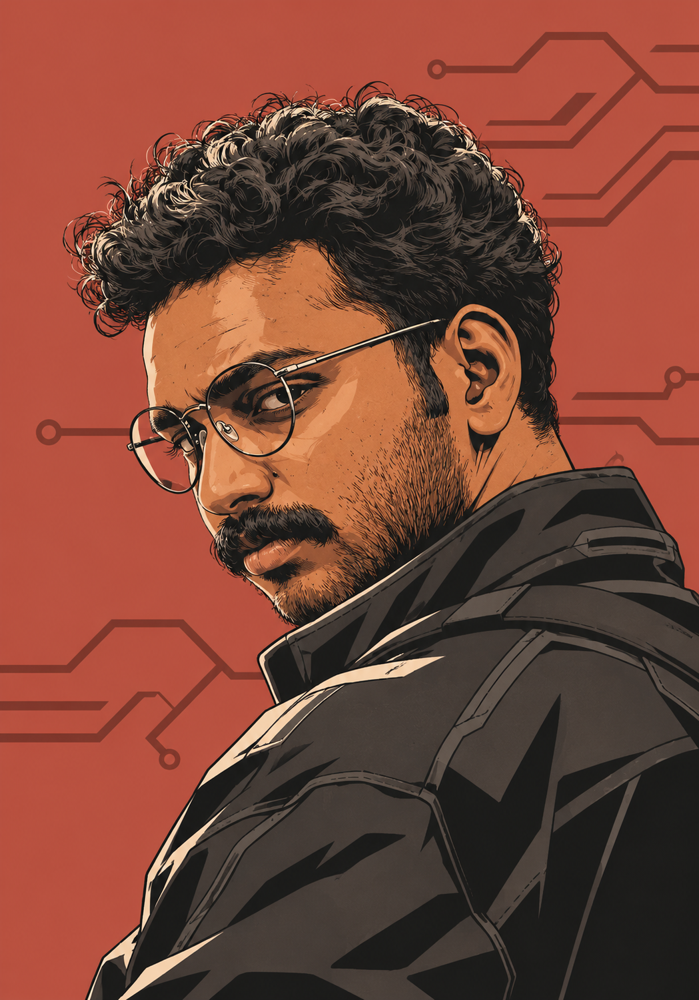

Kerala, India · IST

I build and maintain the backend of a multi-tenant SaaS platform: APIs, data models and the events that keep services in sync.
Share of the live
codebase
I'm a backend engineer with 4+ years building a cloud platform that IT managed service providers (MSPs) use to run their business: support tickets, projects, scheduling, time tracking, billing and a client self-service portal.
I was the founding developer on the main backend API and I'm still its largest contributor. I wrote ~30% of all commits and ~35% of the current code, and created 66 database migrations. My work centres on Node.js, Express and PostgreSQL, multi-tenant data design, and RabbitMQ events that keep billing, timesheet, reporting and audit services consistent.
I enjoy understanding how complex systems behave, tracing problems across service boundaries, and turning fragile workflows into reliable backend processes.
B2B SaaS company · MSP software
Founding backend engineer on the main API of a multi-tenant ticketing and business-management platform for IT service providers.
Founding backend engineer
Owner & maintainer
A progressive web app for helping people find nearby waste bins.
Founding developer, 4+ years of steady commits, largest author of the live codebase.
Fixed same-moment ID collisions, queries running outside their transaction, and invalid time ranges that broke later saves.
Trace missing events across services and rebuild exactly what each consumer expects.
Split a 7,200-line file into clean layers without changing behaviour.
Commit messages written like small incident reports: what broke, why, what changed, what's intentionally left out.
Have a backend problem worth solving, or want to talk multi-tenant systems and event-driven design? My inbox is open.